Vector Operations
Contents
11.2. Vector Operations#
One of the main reasons to use vectors is that enables simple notation for, and implementation of, a variety of operations between two vectors or between a vector and a scalar. In this section, we consider these operations and their visualization.
Let’s start by defining our plotvec() function and visualizing two vectors,
import numpy as np
import matplotlib.pyplot as plt
%matplotlib inline
def plotvec(*argv, chain = False, labels=False, newfig=True,
legendloc='best', color_offset=0):
xmin=0
xmax=-1000000
ymin=0
ymax=-1000000
origin=[0,0]
if newfig:
plt.figure()
for i, head in enumerate(argv):
if type(labels) == bool:
plt.quiver(*origin, *head,
angles='xy',scale_units='xy',scale=1,
color='C'+str(i+color_offset))
else:
plt.quiver(*origin, *head,
angles='xy',scale_units='xy',scale=1,
color='C'+str(i+color_offset), label=labels[i])
xmin=min(xmin,head[0])
xmax=max(xmax,head[0])
ymin=min(ymin,head[1])
ymax=max(ymax,head[1])
if chain:
origin = head
plt.xlim(min(-1, xmin-1), max(1,xmax+1))
plt.ylim(min(-1,ymin-1),max(1,ymax+1))
plt.hlines(0, min(-1, xmin-1), max(1,xmax+1), 'k', linewidth=0.5, alpha=0.5)
plt.vlines(0, min(-1,ymin-1),max(1,ymax+1), 'k', linewidth=0.5, alpha=0.5)
if type(labels) != bool:
plt.legend(loc=legendloc);
a = np.array([2, 3])
b = np.array([1, -2])
plotvec(a, b,
labels = ['$\mathbf{a} = [ 2,3]^T$',
'$\mathbf{b} = [ 1, -2]^T$'],
legendloc='upper left')
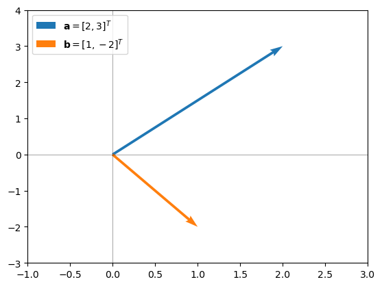
11.2.1. Vector Addition#
Vector addition is one of the easiest operations, because it is just component-wise addition:
DEFINITION
- addition; vectors#
The sum of vectors \(\mathbf{a}\) and \(\mathbf{b}\) is a vector \(\mathbf{a+b}\) whose \(i\)th component is the sum of the \(i\)th components of \(\mathbf{a}\) and \(\mathbf{b}\); i.e. \(\mathbf{(a+b)}_i = a_i + b_i\).
Note that we can visualize the sum of two vectors as the displacement achieved from the consecutive (chained) displacement of the two vectors. The function below takes in a sequence of vectors and plots them with each vector’s head serving as the location of the next vector’s tail. This function also plots the sum of the vectors as a dashed vector:
def plotvecsum(*argv):
xmin=0
xmax=-1000000
ymin=0
ymax=-1000000
origin=[0,0]
plt.figure()
for e in enumerate(argv):
i=e[0]
arg=e[1]
plt.quiver(*origin,*arg,angles='xy',scale_units='xy',
scale=1,color='C'+str(i))
xmin=min(xmin,origin[0]+arg[0])
xmax=max(xmax,origin[0]+arg[0])
ymin=min(ymin,origin[1]+arg[1])
ymax=max(ymax,origin[1]+arg[1])
result=[origin[0]+arg[0],origin[1]+arg[1]]
origin=arg
plt.xlim(xmin-1,xmax+1)
plt.ylim(ymin-1,ymax+1)
plt.plot([0,0.92*result[0]],[0, 0.92*result[1]],
linewidth=3, ls ='--',
color='C2')
plt.quiver(*0.92*np.array(result),*0.08*np.array(result),
angles='xy',scale_units='xy',
scale=1, linewidth=1, color='C'+str(len(argv)))
plt.hlines(0, xmin-1, xmax+1, 'k', linewidth=0.5, alpha=0.5)
plt.vlines(0, ymin-1, ymax+1, 'k', linewidth=0.5, alpha=0.5)
print(result)
plotvecsum(a, b)
[3, 1]
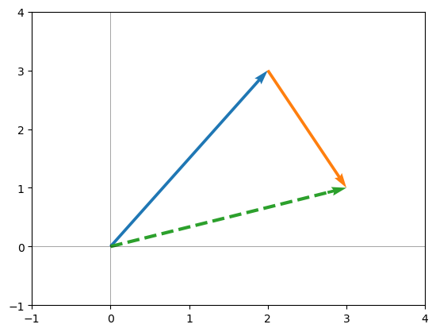
Note that since addition of each component is commutative (i.e., insensitive to order), vector addition is also commutative:
plotvecsum(b, a)
[3, 1]
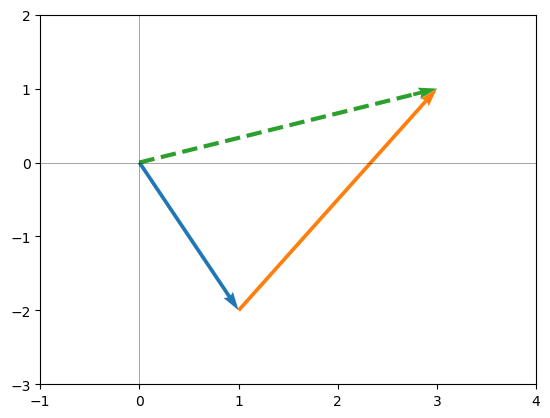
In NumPy, vectors can be added using the usual + operator:
a+b
array([3, 1])
In many cases, we can use Python lists in place of NumPy vectors. However, the + operator will not do component-wise addition on Python lists:
g = [1, 2]
h = [-3, 4]
print(g+h)
[1, 2, -3, 4]
(The + operator concatenates lists.)
11.2.1.1. Properties of Vector Addition#
Because vector addition is component-wise scalar addition, it inherits many of its properties from scalar addition:
Commutative: \(\mathbf{a}+\mathbf{b} = \mathbf{b} + \mathbf{a}\)
Associative: \((\mathbf{a}+\mathbf{b}) +\mathbf{c} = \mathbf{a}+(\mathbf{b} +\mathbf{c})\)
Identity: The zero-vector is the identity for vector addition: \(\mathbf{a} + \mathbf{0} = \mathbf{a}\)
11.2.2. Sum of Elements of a Vector#
In data science, we often want to sum up a set of data that is contained in a vector. If \(\mathbf{x}\) is a \(n\)-vector, then mathematically, the sum of the elements of \(\mathbf{x}\) would be written as
(Later in this section, we will introduce another approach for finding the sum using a type of vector-vector multiplication.)
In Python, we can get the sum of the elements in \(\mathbf{x}\) using np.sum() or the built-in sum() functions:
x = np.array( [1, -3, 4, 10] )
np.sum(x)
12
sum(x)
12
11.2.3. Scalar-Vector Multiplication (Scaling)#
In scalar-vector multiplication, a vector is multiplied by a scalar (a number). This is achieved by multiplying every component of the vector by the scalar:
DEFINITION
- multiplication; scalar-vector#
Given a vector \(\mathbf{x}\) and a scalar \(\alpha\), \(\alpha \mathbf{x}\) is defined as the vector with components given by the components of \(\mathbf{x}\) multiplied by \(\alpha\): \begin{equation*} \alpha \mathbf{x} = \alpha \left[ x_0, ~ x_1,~ \ldots, ~ x_{n-1} \right]^T = \left[ \alpha x_0, ~ \alpha x_1, ~\ldots, ~ \alpha x_{n-1} \right]^T. \end{equation*}
In NumPy, we can multiply a scalar by a vector using the usual * multiplication symbol:
a1 = 0.5 * a
plotvec(a, a1, labels=['$\mathbf{a}$', '$0.5 \mathbf{a}$'])
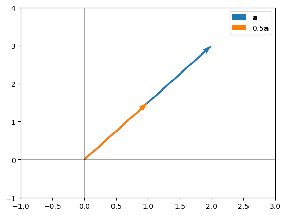
b1 = 3 * b
# I swapped the order so that the vector b will not
# be hidden by the vector 3b
plotvec(b1, b, labels=['3$\mathbf{b}$', ' $\mathbf{b}$'])
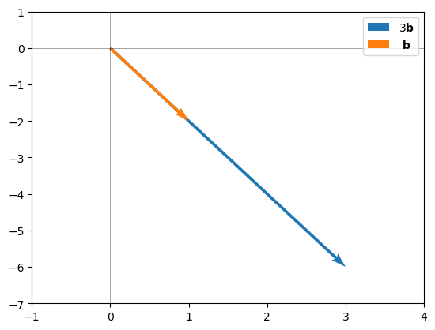
Note that multiplying a vector by a scalar yields an output vector that is in the same direction as the original vector, but it’s length has been changed in a way that depends on the value of the scalar. Let’s consider the effect of negative scalars:
a2 = -0.5 * a
plotvec(a, a2, labels=['$\mathbf{a}$', '$-0.5 \mathbf{a}$'])
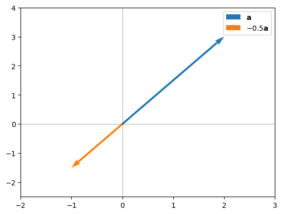
b2 = -3 * b
plotvec(b, b2,
labels=['$\mathbf{b}$', '-3$\mathbf{b}$']
)
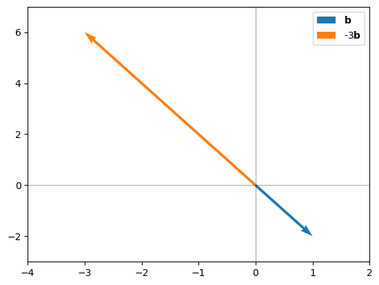
Multiplying by a negative scalar yields a vector that is in the opposite direction as the original vector. The length of the new vector is controlled by the magnitude (i.e., the absolute value) of the scalar.For either scalar magnitude 0.5, the new vector is shorter than the original vector. For either scalar with magnitude 3, the new vector is longer than the original vector.
In general, if \(\mathbf{x}\) is a vector and \(\alpha\) is a scalar, then
if \(|\alpha|<1\), then \(\alpha \mathbf{x}\) will be shorter than \(\mathbf{x}\),
if \(|\alpha|=1\), then \(\alpha \mathbf{x}\) will be the same length as \(\mathbf{x}\), and
if \(|\alpha|>1\), then \(\alpha \mathbf{x}\) will be longer than \(\mathbf{x}\).
The details of how to show this have to wait until we define the length of a vector later in this section.
11.2.3.1. Properties of Scalar Multiplication#
Since scalar multiplication is component-wise multiplication by a scalar, it inherits the properties below from normal multiplication of real values.
If \(\mathbf{x}\) is a vector and \(\alpha\) is a real scalar, then these properties hold:
Commutative: \(\alpha \mathbf{x} = \mathbf{x} \alpha.\) It does not matter whether the multiplying scalar is on the right or left of the vector.
Associative: If \(\alpha\) and \(\beta\) are scalars, then \((\alpha \beta) \mathbf{x} = \alpha (\beta \mathbf{x})\). If multiplying by two scalars, we will get the same result if we do the scalar-scalar multiplication first or the scalar-vector multiplication first.
Distributive over scalar addition: \((\alpha+\beta) \mathbf{x} = \alpha \mathbf{x} + \beta \mathbf{x}\) and \(\mathbf{x} (\alpha+\beta) = \mathbf{x}\alpha + \mathbf{x} \beta \).
Distributive over vector addition: \(\alpha ( \mathbf{x} +\mathbf{y}) = \alpha \mathbf{x} + \alpha \mathbf{y}\)
11.2.4. Vector Subtraction#
We can combine vector addition and scaling to define vector subtraction. We define \(\mathbf{y} - \mathbf{x}\) as \(\mathbf{y} + (-\mathbf{x})\), which yields
If we let \(\mathbf{z} = \mathbf{y} - \mathbf{x}\), then we can also write \(\mathbf{y} = \mathbf{x} + \mathbf{z}\), so \(\mathbf{z}\) is the vector that needs to be added to \(\mathbf{x}\) for the result to be \(\mathbf{y}\).
For example, the figure below show the relation between \(\mathbf{a}\), \(\mathbf{b}\), and \(\mathbf{b-a}\):
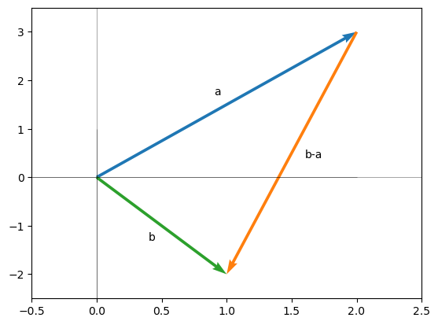
The vector \(\mathbf{x}-\mathbf{y}\) is the negative of the vector \(\mathbf{y}-\mathbf{x}\). Thus both have the same length. The closer that \(\mathbf{x}\) and \(\mathbf{y}\) are to each other, the smaller the length of the difference will be.
11.2.5. Component-wise Vector Multiplication: The Hadamard Product#
Component-wise multiplication of vectors is also known as the Hadamard or Schur product:
DEFINITION
- component-wise multiplication (vectors)#
- Hadamard product#
- Schur product#
Given \(n\)-vectors \(\mathbf{x}\) and \(\mathbf{y}\), the Hadamard product or Schur product is denoted \(\mathbf{x} \odot \mathbf{y}\) and is the \(n\)-vector given by component-wise multiplication of \(\mathbf{x}\) and \(\mathbf{y}\), \begin{equation*} \mathbf{x} \odot \mathbf{y} = \left[ x_0 y_0, ~~ x_1 y_1, ~~ \ldots,~~ x_{n-1} y_{n-1} \right]. \end{equation*}
When printing from Python, we can use the Unicode character 2299. Here we define a string odot containing this Unicode character:
odot = '\u2299'
Then we can use f-strings to write out a product like \(\mathbf{x} \odot \mathbf{y}\) as
print(f'x{odot}y')
x⊙y
For simplicity, we will not print vectors in bold from Python (although that is possible and not that difficult, it adds additional complexity that is unnecessary for the purposes of this book).
Component-wise multiplication is relatively uncommon in mathematics; in fact, there is no standard notation for this operation. However, it is a useful building block for other operations, and it is easy to implement in NumPy. The standard multiplication operator * performs component-wise multiplication:
g = np.array( [1, 2] )
h = np.array( [-3, 4] )
print(f'g{odot}h = {g * h}')
g⊙h = [-3 8]
11.2.5.1. Properties of Hadamard Product#
Because Hadamard product is just a collection of pairwise scalar multiplications across all the elements in two vectors, it takes on properties of scalar multiplication, such as being commutative and distributive across addition:
Commutative: \(\mathbf{a} \odot \mathbf{b} = \mathbf{b} \odot \mathbf{a}\)
Associative with scalar multiplication: \((\gamma \mathbf{a}) \odot \mathbf{b} = \gamma (\mathbf{a} \odot \mathbf{b} )\)
Distributive across vector addition: \((\mathbf{a} +\mathbf{b}) \odot \mathbf{c} = \mathbf{a} \odot \mathbf{c} +\mathbf{b} \odot \mathbf{c}\)
11.2.5.2. Special examples:#
Hadamard product with 0 vector
The Hadamard product of any vector with the zeros vector is the zeros vector:
c= np.array([5,7,9])
z3 = np.zeros(3, dtype=int)
print(f'c{odot}z3 = {c * z3}')
c⊙z3 = [0 0 0]
Hadamard product with 1s vector
The Hadamard product of a vector \(\mathbf{x}\) with the ones vector returns the vector \(\mathbf{x}\):
ones3 = np.ones(3, dtype=int)
print(f'c{odot}ones3 = {c * ones3}')
c⊙ones3 = [5 7 9]
Hadamard product with a Standard Unit Vector
Recall that the standard unit vector \(\mathbf{e}_i\) is a vector that contains all 0s except for a single 1 in position \(i\). Thus, the Hadamard product of a vector \(\mathbf{x}\) with \(\mathbf{e}_i\) contains all zeros except for \(x_i\) in position \(i\):
e2= np.array([0,1,0])
print( f'c{odot}e2 = {c * e2}')
c⊙e2 = [0 7 0]
Hadamard product of a vector with itself
If we take the Hadamard product of a vector \(\mathbf{x}\) with itself, element \(i\) of the result is simply \(x_i \cdot x_i = x_{i}^{2}\). Thus, the result is a vector containing the squares of the elements in \(\mathbf{x}\)
print(f'c = {c}')
print(f'c{odot}c = {c * c}')
c = [5 7 9]
c⊙c = [25 49 81]
We can also get the squares of the elements by using the ** operator on a NumPy vector. It will perform element-wise exponentiation:
print(f'c ** 2 = {c ** 2}')
c ** 2 = [25 49 81]
11.2.6. Vector-Vector Multiplication: Inner Product#
The most common form of multiplication between vectors is called the inner product or dot product. The input is two vectors of the same length, and the output is a scalar:
DEFINITION
- dot product#
- inner product#
Given \(n\)-vectors \(\mathbf{x}\) and \(\mathbf{y}\), the dot product or inner product is denoted \(\mathbf{x} \cdot \mathbf{y}\) or \(\mathbf{x}^T \mathbf{y}\) and is the scalar value given by multiplying corresponding components and summing them up: \begin{equation*} \mathbf{x} \cdot \mathbf{y} = \sum_{i=0}^{n-1} x_i y_i. \end{equation*}
Inner product is a concept that can be applied more broadly than to just vectors and can also be denoted using other notation, such as \(\langle \mathbf{x}, \mathbf{y} \rangle\).
To print the “dot” sign in Python, we can use the unicode character 0xB7, I am going to create variable called dot that contains this unicode value:
dot = '\u00B7'
For simplicity, we will omit bolding the variable names when printing from Python. To print the equivalent of \(\mathbf{x} \cdot \mathbf{y}\) from Python, we will do
print(f'x{dot}y')
x·y
The dot product combines two of the operations we previously discussed: component-wise multiplication, followed by summing up the elements. I.e., multiplication is carried out element-wise, and then the resulting values are added. The example below shows the computation of dot product using these two operations:
g = np.array( [1, 2] )
h = np.array( [-3, 4] )
gh = g*h
g_dot_h = np.sum(gh)
print(f'g{dot}h = {g_dot_h}')
g·h = 5
We can get the dot product directly using Python’s matrix multiplier, which uses the @ (read “at”) symbol. Here is the dot product computation using this operator:
print(f'g{dot}h = {g @ h}')
g·h = 5
Since component-wise multiplication is commutative, the dot product is also commutative:
print(f'h{dot}g = {h @ g}')
h·g = 5
11.2.6.1. Properties of Dot Product#
Because dot product is just the Hadamard product followed by a summation operation, it inherits all of the properties of the Hadamard product:
Commutative: \(\mathbf{a} \cdot \mathbf{b} = \mathbf{b} \cdot \mathbf{a}\)
Associative with scalar multiplication: \((\gamma \mathbf{a}) \cdot \mathbf{b} = \gamma (\mathbf{a} \cdot \mathbf{b} )\)
Distributive across vector addition: \((\mathbf{a} +\mathbf{b}) \cdot \mathbf{c} = \mathbf{a} \cdot \mathbf{c} +\mathbf{b} \cdot \mathbf{c}\)
11.2.6.2. Special examples:#
Dot product with 0 vector
The Hadamard product of any vector with the zeros vector is the zeros vector, so the dot product is the sum over the zeros vector, which is zero:
c= np.array([5,7,9])
z3 = np.zeros(3, dtype=int)
print(f'c{dot}z3 = {c@z3}')
c·z3 = 0
Inner product with 1s vector
The Hadamard product of a vector \(\mathbf{x}\) with the ones vector returns \(\mathbf{x}\), so the dot product with the ones vector returns the sum of the elements in $\mathbf{x}:
ones3 = np.ones(3, dtype=int)
print(f'c{odot}ones3 = {c @ ones3}')
print(f'sum(c) = {np.sum(c)}')
c⊙ones3 = 21
sum(c) = 21
Dot product with a Standard Unit Vector
The Hadamard product of a vector \(\mathbf{x}\) with the standard unit vector \(\mathbf{e}_i\) returns a vector of all zeros, except that element \(i\) will be \(x_i\). Thus, the dot product is simply \(x_i\):
e2= np.array([0,1,0])
print( f'c{dot}e2 = {c @ e2}')
c·e2 = 7
Averaging
We can use the dot product to compute the average value of the elements in a \(n\)-vector by dotting the vector with a vector whose elements are all \(1/n\)
div3 = np.ones(3)/3
print(div3)
[0.33333333 0.33333333 0.33333333]
print(f'The dot product of c with a vector of (1/3) values is {div3 @ c}')
print(f'The average of the values in c using np.mean is {np.mean(c)}')
The dot product of c with a vector of (1/3) values is 7.0
The average of the values in c using np.mean is 7.0
Dot product of a vector with itselt: Sum of squares
Recall that the Hadamard product of a vector \(\mathbf{x}\) with itself is a vector of the sums of the elements in \(\mathbf{x}\). Then the dot product of a vector with itself is the sum of the squares of the elements in the vector:
Let’s try this out using our example vector, \(\mathbf{c}\):
print(f'c = {c}')
print(f'c{odot}c = {c * c}')
print(f'c{dot}c = {c@c}')
c = [5 7 9]
c⊙c = [25 49 81]
c·c = 155
Taking the inner product of a mathematical object with itself is common enough that mathematicians have introduce a special name an notation for it:
DEFINITION
- norm squared#
For a mathematical object \(\mathbf{x}\) with an inner product operator \(\langle , \rangle\), the norm squared is denoted by \(\| x \|^2\), and defined as \begin{equation*} | x |^2 = \langle x, x \rangle .\end{equation*}
Since inner product for vectors is the dot product, the norm squared of a vector \(\mathbf{x}\) is \(\|x\|^2 = \mathbf{x} \cdot \mathbf{x}\).
11.2.7. Length or Magnitude of a Vector#
Consider again the vector \(\mathbf{a} = \left[2, 3 \right]^T\), shown below:
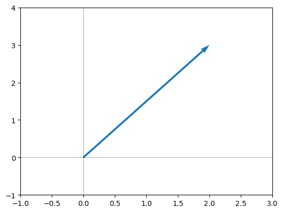
Then \(\mathbf{a}\) is the hypotenuse of a right triangle with sides 2 and 3, as shown below:
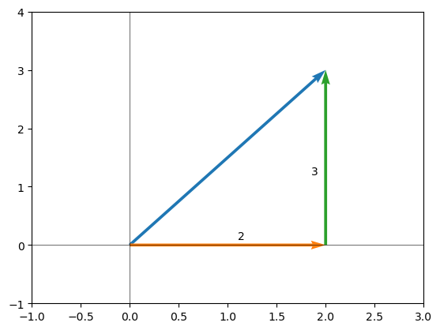
Let \(\ell_a\) denote the length of \(\mathbf{a}\). Then by the Pythagorean theorem,
or
For any 2-vector \(\mathbf{x} = \left[ x_0, x_1\right]\), the same mathematical approach will give the length \(\ell_x\) a
The argument inside the square-root is simply the norm squared of \(\mathbf{x}\), so we can write
which we can simplify to write
The length of the vector \(\mathbf{x}\) is the norm of \(\mathbf{x}\). The norm of any mathematical object that has an associated inner product operation is defined below:
DEFINITION
- norm #
For a mathematical object \(\mathbf{x}\) with an inner product operator \(\langle , \rangle\), the norm is denoted by \(\| x \|\) and defined as \begin{equation*} | x |^2 = \sqrt{\langle x, x \rangle }.\end{equation*}
The norm of a vector \(\mathbf{x}\) is its length even if \(\mathbf{x}\) has more than two dimensions.
Let’s start by computing the length of \(\mathbf{a}\) by working with the individual elements of \(\mathbf{a}:\)
print(f'|a| = {np.sqrt(a[0]**2 + a[1]**2)}')
|a| = 3.605551275463989
Now, let’s use the dot product to find the norm-squared of \(\mathbf{a}\) (the part inside the square root:
print(f'||a|| = {np.sqrt(a @ a)}')
||a|| = 3.605551275463989
Finding the norm of a vector is a relatively common operation, so NumPy has a norm operator in the np.linalg module:
print(f'||a|| = {np.linalg.norm(a)}')
||a|| = 3.605551275463989
Now recall our examples of scaling \(\mathbf{a}\) by multiplying it by a constant. Let \(\mathbf{w} = \gamma \mathbf{a}\), where \(\gamma\) is some constant. For example, we previously considered \(\gamma =0.5\):
a1 = 0.5 * a
plotvec(a, a1,
labels=['$\mathbf{a}$', '$0.5 \mathbf{a}$'])
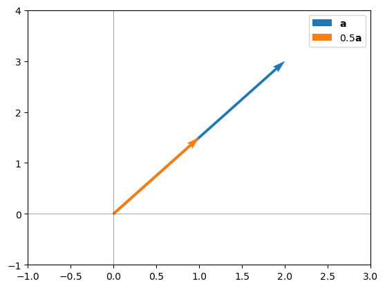
For an arbitrary vector \(\mathbf{x}\), we can calculate the length of \(\gamma \mathbf{x}\) as
For our example, the length of \(0.5 \mathbf{a}\) is \(0.5 \|a\|\). Let’s check:
w = 0.5*a
print(f'||a|| = {np.linalg.norm(a)}')
print(f'||0.5a|| = {np.linalg.norm(w)}')
||a|| = 3.605551275463989
||0.5a|| = 1.8027756377319946
We can see that the norm of \(0.5 \mathbf{a}\) is one-half the norm of \(\mathbf{a}\).
11.2.8. Distance Between Vectors#
We define the distance between two \(n\)-vectors as follows:
DEFINITION
- distance (vectors) #
The distance between two \(n\)-vectors \(\mathbf{x}\) and \(\mathbf{y}\) is the norm of the difference between the vectors, \(\| \mathbf{x} - \mathbf{y} \| = \|\mathbf{y} - \mathbf{x} \|.\)
In the next section, we use these vector operations to find summary statistics for vector data, including defining some new statistics that provide an indication of how different data affect each other.